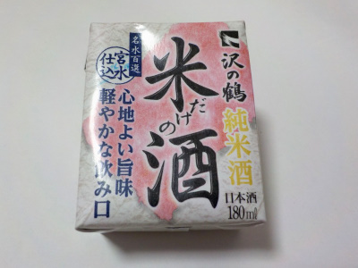
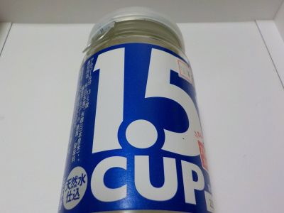
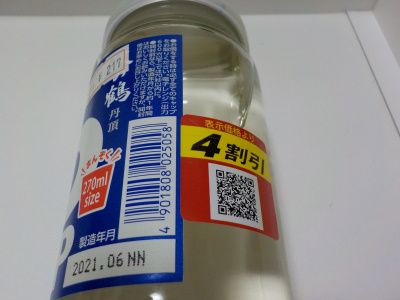

沢の鶴純米酒米だけの酒名水百選宮水仕込心地よい旨味軽やかな飲み口。
更新日 : 2023/08/04

パッケージの文字が多いですね。伝えたいことが沢山です。
お酒らしくアルコールの感じがしっかりあるお酒だなと思いました。
飲んでておつまみが食べたくなりました。なんか食が進みました。
神戸市灘区新在家南町5丁目1番2号
更新日 : 2023/08/04

パッケージの文字が多いですね。伝えたいことが沢山です。
お酒らしくアルコールの感じがしっかりあるお酒だなと思いました。
飲んでておつまみが食べたくなりました。なんか食が進みました。
更新日 : 2026/09/22

そもそも1.5倍入っててお得な沢の鶴ですが、更に4割引きになっていました。これは買いますね。

製造が2021.06となっていますので、1年以上経過しています。パッケージには製造年月より1年間はおいしくお飲みいただけますと書かれています。
もう本来の味じゃないかもしれますせん。出来たら5月くらいに4割引きになってて欲しかったなーなんて勝手なことを思いました。
透明感がありますが、ピリとした感じや甘い感じもしました。味はあるんですが、サラサラと軽い飲みごたえでした。
2022/08/06 次は賞味期限内のものを飲もう。
2026/09/22 おつとめ品だけど期限内のものを飲みました。サラサラしてて飲みやすくて美味しかったです。品質は落ちていない気がする。